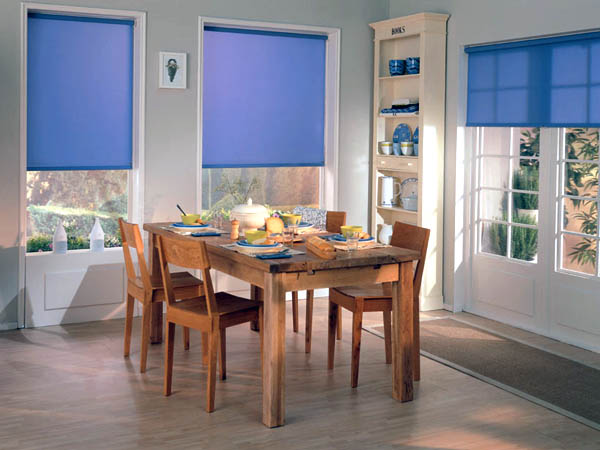
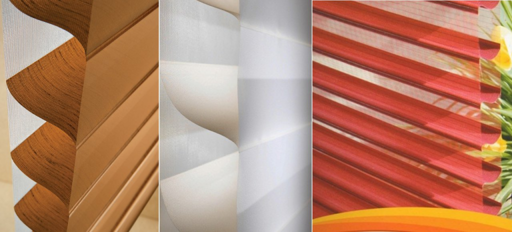
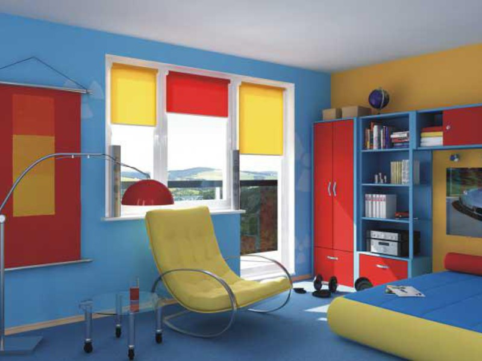
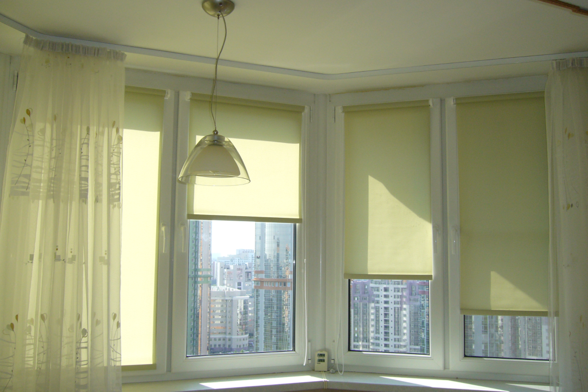

Тканеві Ролети
Рулонні штори відкритого типу – це суцільне полотно тканини, що намотується на алюмінієву трубу (вал), яка кріпиться безпосередньо до вікна, стіни чи стелі. Регулюється дана шторка за допомогою ланцюжка, а при відкритті вікна в положенні «провітрювання», шторка фіксується за допомогою магнітиків або направляючих жилок.
Встановлюючи рулонні штори на пластикові вікна, Ви отримуєте єдину конструкцію, позбавлену незручностей при відкритті та закритті вікна.
ВНУТРІШНІ ПІДВІКОННЯ
Рулонні штори «День-ніч» – сонцезахисна система з двох шарів тканини. Оптимальний розподіл світла досягається за рахунок зміщення прозорих смуг вгору або вниз. Рулонні штори такого типу виглядають дуже стильно і незвично. Вони прикрасять інтер’єр будь-якого приміщення як офісного, так і житлового.
Варто відзначити окрему увагу при виборі тканини, які мають різну світлову пропускну здатність, аж до повного блокування світла, іменована як blackout.
Оформлення інтер’єру приміщення – це складне та відповідальне завдання, оскільки далеко не кожен може підібрати всі елементи інтер’єру таким чином, щоб вони гармоніювали між собою. Важливу роль в даному випадку відіграє оформлення вікон, оскільки вони часто виступають в якості головного акценту в інтер’єрі кімнати.
ТКАНИННІ РОЛЕТИ У ЛЬВОВІ
Рулонні штори – це сучасний варіант захисту вікон від сонячних променів, який має стильний та оригінальний дизайн. Вони допоможуть внести до вашого інтер’єру певну родзинку та доповнити обраний вами стиль.
Ролети тканинні можуть мати різну конструкцію та поділяються на два основні типи:
закриті системи (касетні);
відкриті системи.
Тканинні ролети представляють собою цільне полотно спеціальної тканини, що намотується на вал за рахунок системи управління. Тканинні ролети касетного типу обладнуються спеціальним коробом, що прикриває вал із тканиною, та направляючі, які дозволяють зафіксувати полотно тканини. Відкриті ролетні штори часто обладнуються системою фіксації, що називається «струною». Тканини для таких штор виготовляються з поліестеру, який надає їм необхідного рівня жорсткості. Іноді до складу тканини додається льон або віскоза.
ПЕРЕВАГИ ТКАНИННИХ РОЛЕТІВ
Обираючи рулонні штори для свого будинку, ви можете розраховувати на наступні переваги:
широкий асортимент різноманітних тканин та відтінків;
надійність та тривалий термін експлуатації;
відсутність необхідності в догляді та пранні, практичність у використанні;
стійкість до пилу;
здатність тримати форму.
Тканинні ролети можуть встановлюватись окремо або доповнювати звичайні штори та захищати їх від вигоряння на сонці. Коли рулонні штори закриті, то між матеріалом ролета та вікном утворюється повітряний простір, що захищає від спеки в літній період та від холоду в зимову пору.
Існує близько шести різновидів підйому-опускання ролет. Найбільшого поширення набули автоматичні рол-штори, а також моделі пружинного та рамочного типу.
КУПИТИ ТКАНИННІ РОЛЕТИ
Ми пропонуємо вам широкий асортимент тканинних ролет на будь-який смак. У нас ви знайдете рулонні штори, які стануть доповненням вашого інтер’єру та допоможуть зробити його цілісним. Наші спеціалісти дадуть відповідь на всі запитання, що вас цікавлять, та в разі необхідності допоможуть підібрати тканинні ролети для вашого дому.
РУЛОННІ ШТОРИ: ПЕРЕВАГИ СУЧАСНОГО ОЗДОБЛЕННЯ ПРИМІЩЕНЬ
Рулонні штори – це популярні вироби для оформлення віконних прорізів у житлових, офісних та інших приміщеннях. Важкі гардини зі складками та ламбрекенами також не втрачають актуальності, але все більше споживачів надають перевагу простим сучасним рішенням. Наприклад, у невеликій кімнаті пишні традиційні штори зменшать і без того тісний простір, а якщо використати легкі тканинні ролети, то це візуально розширить його. Рулонні штори представлені безліччю фактур та відтінків, а їх розмір підбирається в залежності від потреб конкретного замовника. Їх можна встановити на великому панорамному склі балкону, а можна і на маленькому віконечку на дачі. Один порух руки – і ваше житло захищене від сонячного світла, мерехтіння ліхтарів чи сторонніх поглядів.
ВИДИ РУЛОННИХ ШТОР В ЗАЛЕЖНОСТІ ВІД ВИКОРИСТАНОЇ ТКАНИНИ
Перш за все слід відзначити, що тканинні ролети бувають відкритого та закритого типів. У першому випадку полотно, що намотується на штангу, нічим не закривається, а у другому – приховується коробом (касетою). Тип конструкції впливає на ціну виробу та на спосіб його кріплення. Інша важлива характеристика рулонних штор – тканина, з яких вони виготовлені. У залежності від того, яка кількість світла проходить крізь полотно, тканини відрізняються такими характеристиками:
прозорі: вироби дуже добре пропускають сонячні промені, але при цьому розсіюють їх. Завдяки цьому приміщення наповнюється м’яким та приємним світлом, створюється сприятлива атмосфера для відпочинку. Також тканинні ролети з тонкого полотна зручно використовувати в офісах та робочих кабінетах, оскільки вони запобігають появі сонячних відблисків на моніторах та інших подібних пристроях. Рулонні штори надійно захистять меблі та інші предмети інтер’єру від прямої дії сонячних променів влітку, не створюючи в кімнаті сутінків;
напівпрозорі: тканина частково пропускає світло, але при цьому добре відбиває тепло. Рулонні штори, виготовлені з неї, допомагають підтримувати оптимальний температурний режим всередині житлових та офісних приміщень, зимових садів, оранжерей;
багатошарові спеціалізовані тканини: полотно відрізняється світлонепроникними властивостями. Рулонні штори з такого матеріалу використовують там, де є необхідність повного затемнення приміщення в світлу пору доби. Це можуть бути офіси, конференц-зали, кімнати з домашніми кінотеатрами, рентген-кабінети, різні дослідницькі лабораторії тощо. Якщо у вас перед вікном спальні знаходиться висока будівля з яскраво освітленим вночі фасадом (торговий центр, автозаправка, кінотеатр), то щільні рулонні штори допоможуть забезпечити нормальні умови для сну. Треба відзначити, що ролети з такої тканини – це більш вдале рішення, ніж жалюзі;
«день-ніч»: виріб складається з двох шарів тканини. Зсуваючи смуги тканини одна відносно одної за допомогою спеціального механізму, можна регулювати інтенсивність освітлення у приміщенні. Рулонні штори цього типу виготовляються з матеріалу одного кольору або поєднання декількох. У залежності від розташування смуг, змінюється не лише освітлення в кімнаті, але й відтінок самої штори. Такі вироби виглядають стильно та привабливо, вони прикрасять будь-яке приміщення;
система 3D-Shade: сучасні технологічні вироби, які поєднали в собі легкість звичайних тканинних ролет, функціональність штор «день-ніч» та практичність жалюзі. Положення полотна, реалізованого в трьох площинах, регулюється на зразок звичайних ламелів. Такі системи мають досить високу вартість, але все одно користуються попитом серед споживачів.
Як бачимо, виробники пропонують широкий вибір ролет. Їх все частіше можна спостерігати в житлових та виробничих приміщеннях.
ВИБИРАЄМО РУЛОННІ ШТОРИ: ВРАХОВУЄМО ДЕТАЛІ
Коли ви приймаєте рішення про покупку рулонних штор, то одразу виникає безліч запитань. Варто відзначити, що одні види тканинних ролет коштують дешевше, а придбання інших обійдеться в досить значну суму, особливо якщо треба оздобити велике приміщення. Нікому не хочеться купувати неякісні штори та витрачати гроші дарма. Тож до вибору товарів треба підійти з усією відповідальністю:
у першу чергу необхідно визначитися із типом виробів. Це можуть бути недорогі тонкі штори або більш практичні середньої жорсткості. Якщо ви хочете додати функціональності, то оберіть систему «день-ніч» або 3D-Shade. За потреби тотального затемнення, звичайно, зверніть увагу на щільні тканини;
конструкція підйомного механізму залежатиме від способу кріплення, а також від типу рулонних штор. Так, наприклад, відкриті системи добре виглядають і нормально функціонують із тонкими полотнами;
.png)
вибір рулонних штор також залежить від приміщення, в якому вони монтуватимуться. Обов’язково враховуйте колірну гамму кімнати. Якщо ви не бажаєте робити акцент на тканинних ролетах, то виберіть нейтральні відтінки. Також не будуть вирізнятися в інтер’єрі рулонні штори в ідентичній кольоровій гаммі. Але якщо ви не боїтесь сміливих рішень, то можна вдало зіграти на контрастах. У такому випадку тканинні ролети привертатимуть до себе увагу. Доречним це буде в кімнаті, оформленій в стилі мінімалізм;
для офісних та інших робочих приміщень варто вибирати рулонні штори нейтральних спокійних відтінків. Часто тканинні ролети використовують у школах та інших подібних установах. Безперечно, це дуже зручно, оскільки за їх допомогою можна легко регулювати інтенсивність освітлення в класі чи аудиторії, які також часто оснащуються комп’ютерами, інтерактивними дошками, проекторами тощо;
інколи ролети використовуються з метою поділу приміщення на окремі зони. Якщо вам треба купити рулонні штори саме для цього, то в першу чергу слід буде звернути увагу на тип тканини;
рулонні штори можна вдало поєднувати з традиційними. Якщо ви не любите важких гардин, але все ж таки не хочете відмовлятися від фіранок, то придбання тканинних ролет дозволить вирішити цю проблему. На рамі монтуються ролети, які захищатимуть приміщення від сонячного випромінювання та сторонніх очей, а на звичайному карнизі закріплюються фіранки з легкого шифону, органзи, тюлю, сатину тощо;
рулонні штори, на відміну від звичайних, набагато краще захищають приміщення від перегрівання в літню спеку. Між звичайною гардиною та склом залишається досить великий простір, повітря в якому нагрівається та потрапляє до кімнати. Полотно ж ролети розташоване майже впритул до скла та відбиває сонячні промені. Це допомагає заощадити на кондиціюванні;
виробники пропонують ролети у найрізноманітніших кольорових рішеннях. Вони бувають як однотонні, так і з різноманітними візерунками. Вибір рулонних штор залежатиме виключно від ваших уподобань. Ви можете купити яскраві тканинні ролети в дитячу кімнату або на кухню, в теплих тонах у вітальню чи спальню. Також ними можна захищати вікна у ванних кімнатах, холах та інших приміщеннях.
Але найважливіший момент у виборі рулонних штор – визначення їх розміру. Якщо раптом ширина полотна виявиться недостатньою, то ви не зможете забезпечити повноцінний захист приміщення. А якщо рулонна штора буде ширшою за віконний проріз, то навряд чи вдасться її нормально піднімати та опускати. Радимо доручити справу вимірювання спеціалістам. Співробітники нашої компанії зроблять заміри та за потреби допоможуть визначитися з типом рулонних штор. Ми проводимо заміри та встановлення вікон, дверей, жалюзі, металевих та тканинних ролет та іншої продукції у Львові.
Зверніться за консультацією до наших спеціалістів по номеру 380678698210.